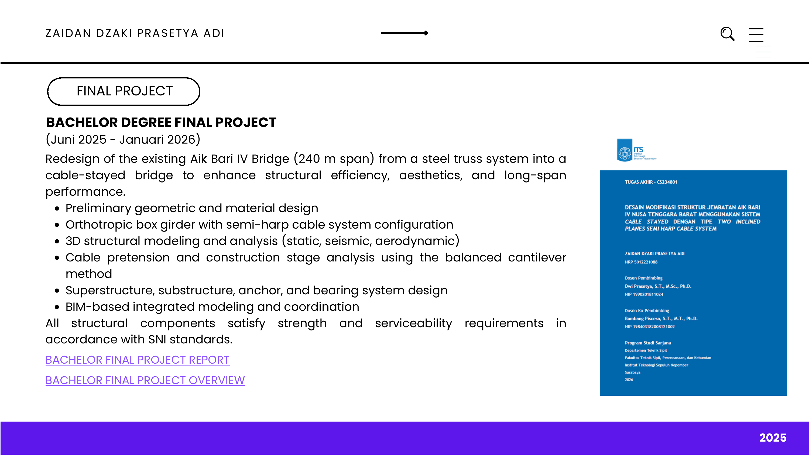
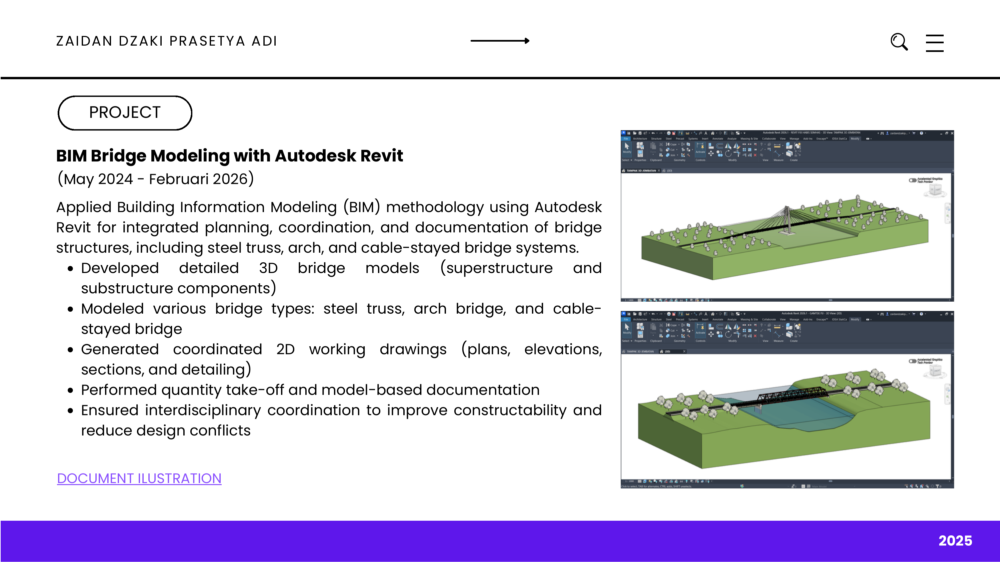
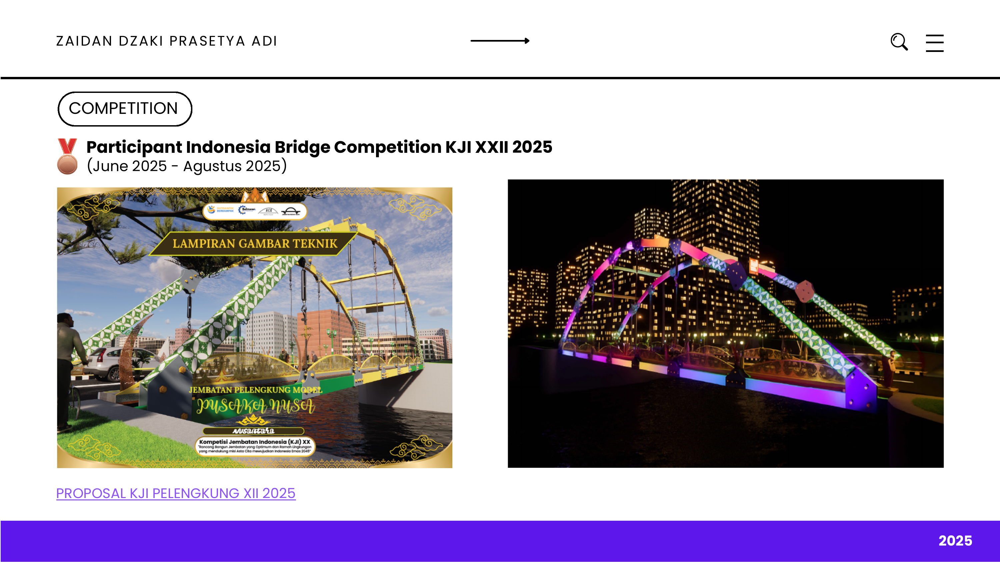
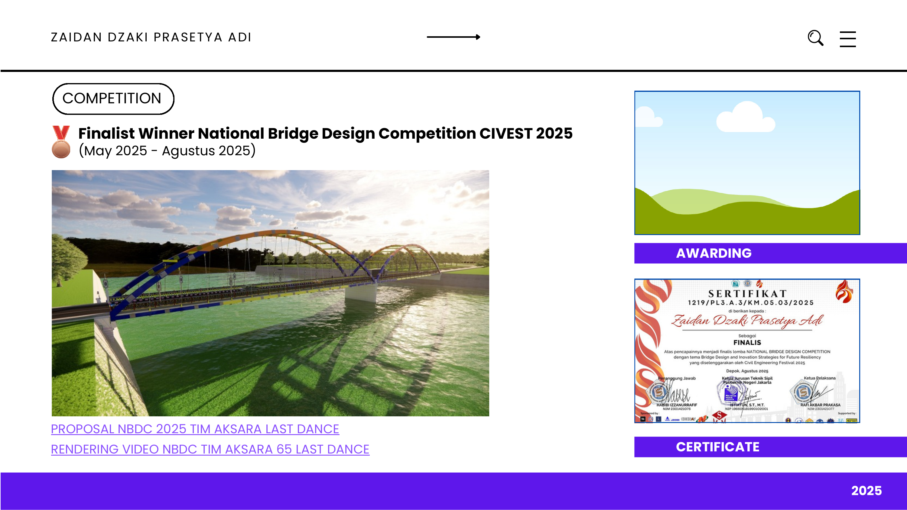

Bachelor Capstone Project
Aik Bari IV Bridge Modification (240 m Cable-Stayed Bridge)
Role: Lead Structural & BIM Modeler | Tools: MIDAS Civil, SAP2000, Revit LOD 350, SMath
Jun 2025 – Jan 2026

View Full Presentation Slide



1. Project Brief
Comprehensive geometric modification and redesign of the 240-meter Aik Bari IV Bridge from an existing steel truss system into a signature semi-harp cable-stayed bridge to enhance navigation clearance, aerodynamic stability, and long-span resilience.
2. Technical Challenges
- Non-Linear Cable-Structure Coupling: Managing geometric non-linearities (P-Delta, cable sag, large displacement) and balanced cantilever construction stage erection forces.
- Seismic & Aerodynamic Flutter: Meeting stringent lateral displacement and flutter velocity thresholds per SNI 2833:2016 for long-span flexible decks.
3. Engineering Solutions & Impact
- Initial Tension Optimization: Executed Unknown Load Factor (ULF) optimization in MIDAS Civil to compute target cable pre-tensions, achieving zero-tension deck limits upon bridge closure.
- Aerodynamic Box Girder: Configured a streamlined orthotropic steel box girder with semi-harp stay layout, maximizing torsional rigidity.
- LOD 350 BIM Delivery: Produced clash-free parametric Revit models detailing anchor heads, dampers, bearing pads, and deep bored-pile substructures.